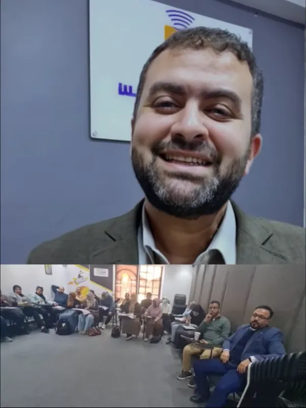

RadioMind · 2026
Round 3 MSK US 2026
ورشة عملية في السونار العضلي الهيكلي، مع شرح تطبيقي وممارسة مباشرة على أجهزة السونار.
شاهد ملخص الورشة ↗
الحضور العلمي
أرشيف مختار من ورش RadioMind والمشاركات العلمية، ومساحة للإعلان عن البرامج الجديدة بعد اعتماد تفاصيلها.
آخر التحديثات
نشارك هنا الأخبار التي تم التحقق من تفاصيلها فقط؛ أي موعد قادم سيُنشر بعد اعتماده رسميًا.

ورشة عملية في السونار العضلي الهيكلي، مع شرح تطبيقي وممارسة مباشرة على أجهزة السونار.
شاهد ملخص الورشة ↗
إعلان سلسلة جديدة من ورش العمل لنقل الخبرة العملية في سونار الأطفال وحديثي الولادة.
تابع الإعلان الرسمي ↗أدلة مبسطة للاستعداد للفحص، وفيديوهات من الممارسة والتدريب تساعد كل زائر على الوصول إلى ما يهمه.
صور من الرحلة
صور مختارة من الأرشيف التدريبي الذي شاركه د. محمد ضمن ملفه المهني.

الفعاليات القادمة
لتجنب أي موعد قديم أو غير مؤكد، تُنشر تفاصيل الدورات الجديدة على الحساب الرسمي أولًا، ثم تُضاف هنا.